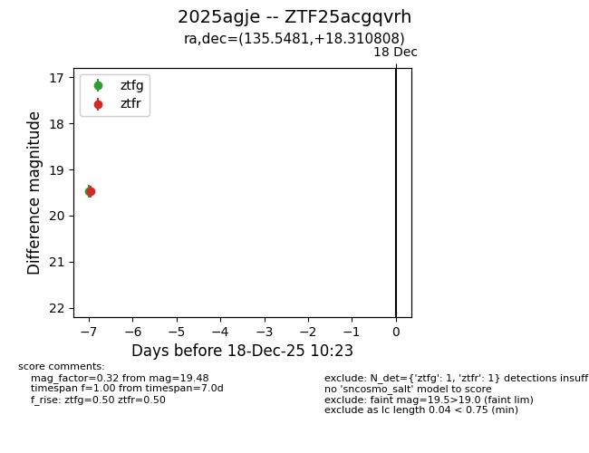
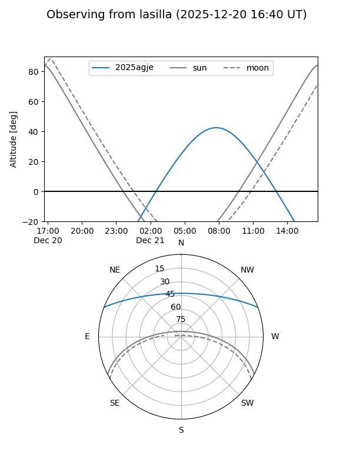
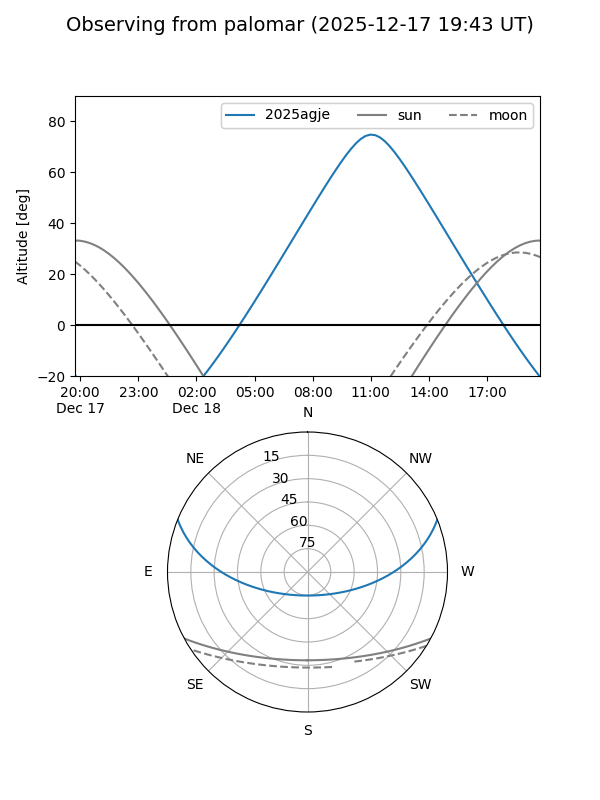
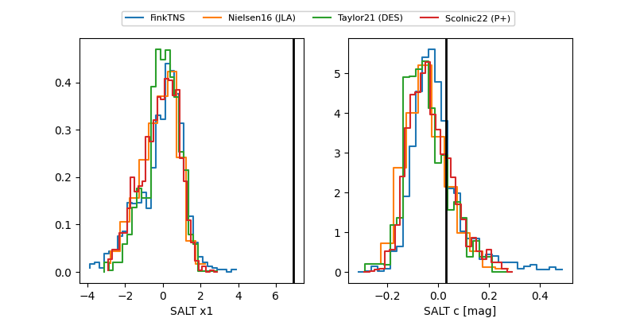

2025agje
Target 2025agje at 2025-12-18 13:27
Aliases and brokers:
FINK: fink-portal.org/ZTF25acgqvrh
Lasair: lasair-ztf.lsst.ac.uk/objects/ZTF25acgqvrh
ALeRCE: alerce.online/object/ZTF25acgqvrh
TNS: wis-tns.org/object/2025agje
YSE: ziggy.ucolick.org/yse/transient_detail/2025agje
alt names
ZTF25acgqvrh (ztf,fink_ztf)
2025agje (tns,yse)
Coordinates:
equatorial (ra, dec) = 135.5481,+18.31081
equatorial (HMS+DMS) = 09:02:11.55,+18:18:38.91
galactic (l, b) = (209.6503,+36.83973)
Photometry
last ztfg=19.52, ztfr=19.52
2 ztfg, 2 ztfr detections
Lightcurve

Visibility


Additional plots
